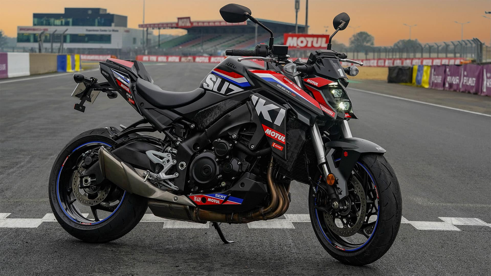
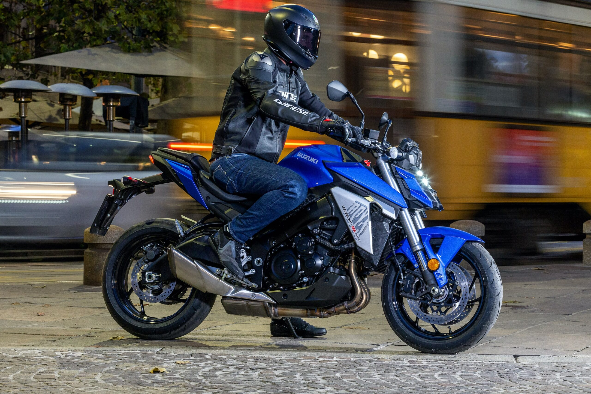
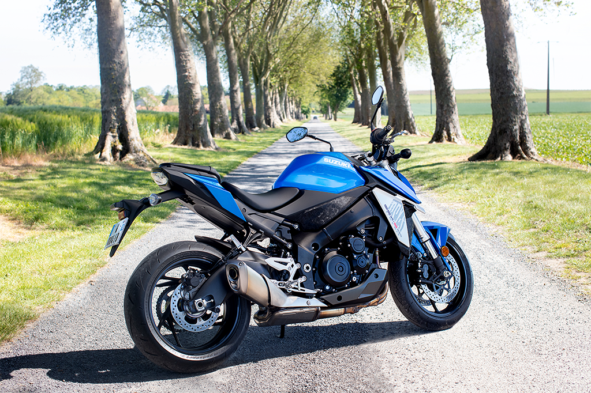
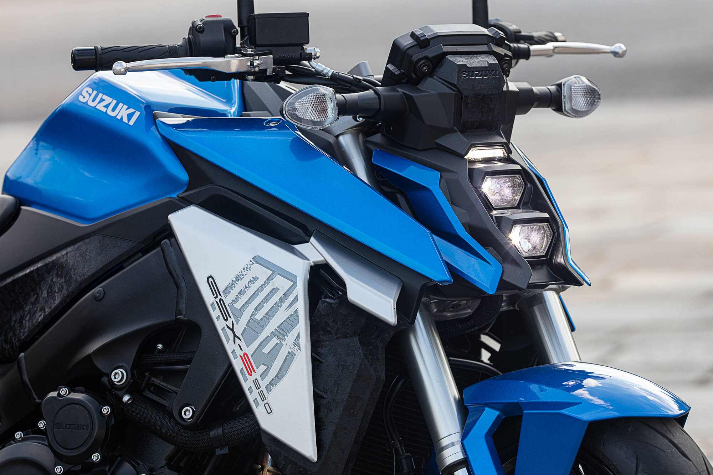
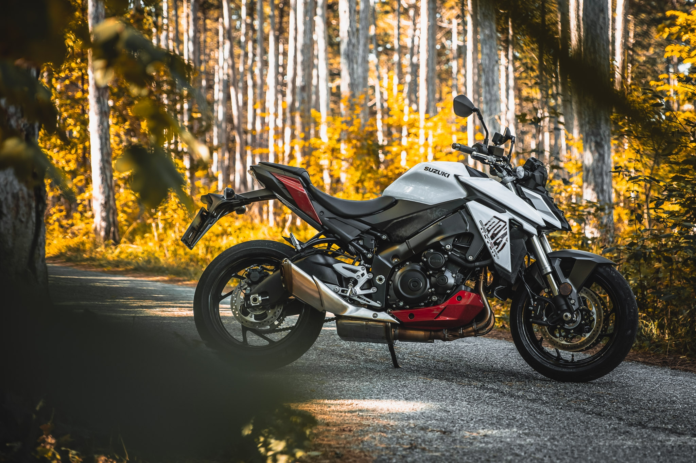

SUZUKI
SUZUKI
Is a motorcycle that is designed for both new and returning riders¹.
The GSX-S950 is powered by a 999cc four-stroke DOHC liquid-cooled inline-four engine². This engine uses winning superbike DNA and is designed to perform in street conditions². It is balanced to meet the needs of those wanting fun and usability rather than just outright peak performance². With 95PS (70kW) peak power, it can be switched to 47.5PS (35kW) to make this model available to A2 licence holders too².
The GSX-S950 features a compact, lightweight package that makes it agile and predictable to handle². Its twin-spar aluminium frame helps deliver easy handling and great road holding ability². The chassis connects to a ruggedly braced aluminium swingarm that further contributes to the road gripping character².
The GSX-S950 has high specification radial-mount Tokico monobloc calipers². The calipers each have four opposed 30mm pistons acting on a 310mm floating-mount disc for strong stopping power².
The front suspension system employs durable 43 mm KYB inverted front forks¹². These forks provide a ride that is smooth yet sporty, with 120mm of stroke¹². The rear features link-type suspension¹². It reacts efficiently to varying road surfaces to maintain an agile and stable feel¹². It helps offer up to 130mm of rear wheel travel¹².
As of 2024, the GSX-S950 is available for £10,499².